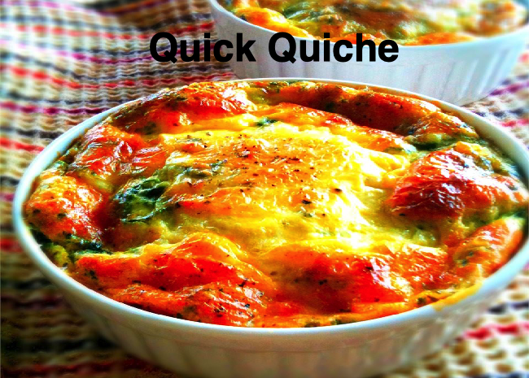

When you don't have the time to make a pastry crust, try this quick lunch idea.
You may add any other goodies you like, such as ham, chicken, crab, shrimp or broccoli.
Ingregients
- 8 slices bacon
- 4 ounces shredded Swiss cheese
- 2 tablespoons butter, melted
- 4 eggs, beaten
- ¼ cup finely chopped onion
- 1 teaspoon salt
- ½ cup all-purpose flour
- 1 ½ cups milk
Directions
- Place bacon in a large, deep skillet. Cook over medium high heat until evenly brown. Drain, crumble and set aside.
- Preheat oven to 350 degrees F (175 degrees C). Lightly grease a 9 inch pie pan.
- Line bottom of pie plate with cheese and crumbled bacon. Combine eggs, butter, onion, salt, flour and milk;
whisk together until smooth; pour into pie pan.
- Bake in preheated oven for 35 minutes, until set. Serve hot or cold.
- Prep: 15 mins
- Cook: 35 mins
- Total: 50 mins
- Yield: 6 servings
Return to recipies page